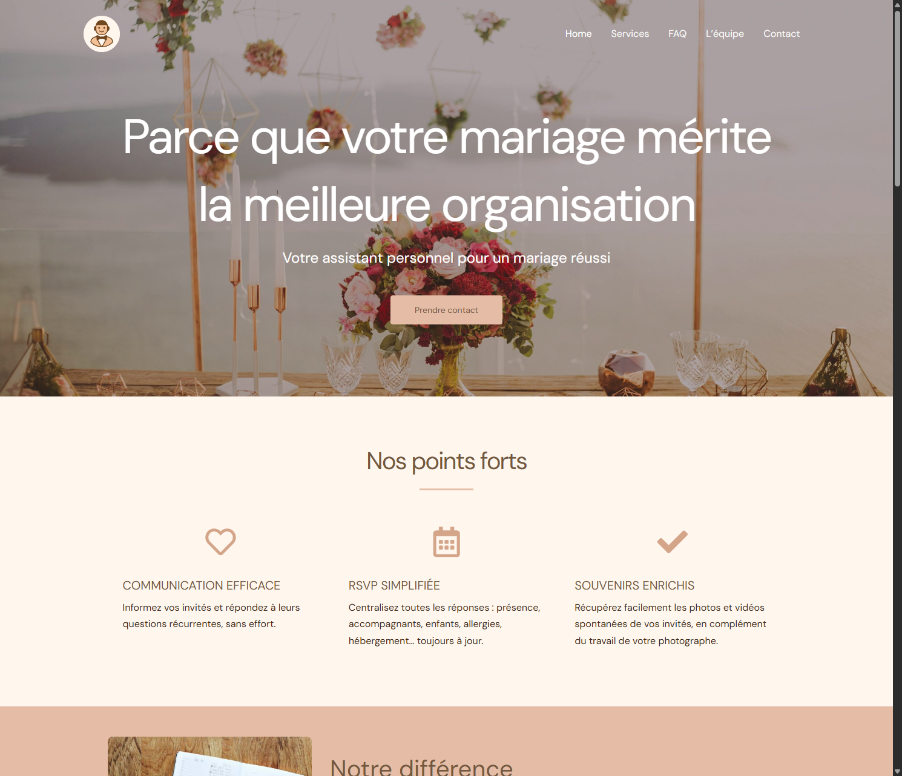
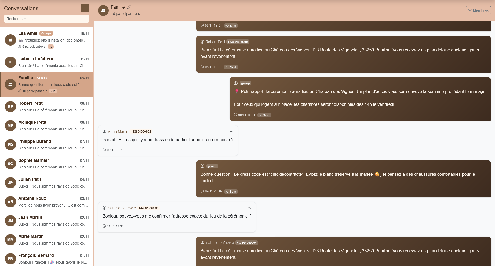

Ingenieur logiciel et builder base a Lausanne. Je ne fais pas que coder — je comprends le probleme, je concois la solution, et je m'assure qu'elle tourne en production pour de vrais utilisateurs.
J'aborde chaque defi de maniere holistique — comprendre le probleme, concevoir la bonne solution, la construire et m'assurer qu'elle fonctionne parfaitement en production.
Analyser le vrai probleme. Echanger avec les parties prenantes. Cartographier les contraintes avant d'ecrire une seule ligne.
De l'idee au systeme en production. Python, Django, Go — ce qui resout le probleme correctement.
Etat d'esprit security-first forge dans des industries reglementees. DevSecOps integre des le depart, pas ajoute apres coup.
CI/CD, reponse aux incidents, 99.9% d'uptime. Je suis responsable du cycle de vie complet jusqu'a l'utilisateur.
Un chemin guide par la curiosite, du developpeur autodidacte a la creation de mon propre produit.
Assistant IA pour la gestion des invites de mariage via WhatsApp
Conception et developpement d'un assistant intelligent qui gere la communication avec les invites d'un mariage directement via WhatsApp. RSVP automatise, reponses multilingues, messagerie ciblee par groupes d'invites, et collecte de photos/videos apres l'evenement.
Infrastructure d'actifs numeriques pour les banques mondiales
Pont entre l'equipe Engineering et les equipes techniques des clients (IT, sysadmin, DevOps). Gestion des environnements de production en services manages, support operationnel, accompagnement a l'integration via API et middlewares, gestion des incidents et documentation technique.
Reponse aux incidents, audits de securite, DevSecOps
Gestion et coordination de la reponse aux incidents de securite. Audits legers pour identifier les vulnerabilites dans l'infrastructure des clients. Developpement de solutions de securite d'entreprise et mise en place de methodologies DevSecOps.
Services cloud-native pour la photogrammetrie a grande echelle
Architecture et developpement de services backend cloud-native haute performance. Deploiement avec outils d'automatisation (DevOps), definition de l'architecture de securite, optimisation des couts AWS, developpement RDBMS, operations SaaS. Participation au recrutement et mentorat de developpeurs juniors a seniors.
Autodidacte, CFC en informatique, premieres experiences startups
Developpeur full-stack dans plusieurs startups (TasFaim, Gokera, imavox). Django, Scala, jQuery. CFC en informatique a l'Ecole des metiers techniques. Responsable de la branche web/multimedia chez AZ Informatique, en contact direct avec les clients du debut a la fin des projets.
Ce que je construis en ce moment.
Wedding Valet gere la communication avec les invites d'un mariage via WhatsApp — RSVP, logistique, reponses multilingues, et collecte de photos apres l'evenement. Aucune application a installer, tout se passe dans une conversation.


Je ne cherche pas juste des missions — je cherche des problemes interessants a resoudre avec des gens qui veulent construire quelque chose de solide.
Deployements douloureux, incidents recurrents, couts cloud qui explosent ? Je peux auditer, restructurer et automatiser.
De l'idee au MVP en production. Architecture, backend, deploiement, monitoring — je peux vous accompagner sur tout le cycle.
Mettre en place les bonnes pratiques DevOps, former sur l'IaC, renforcer la securite — je peux integrer votre equipe sur une mission precise.
Pas besoin d'un cahier des charges de 40 pages. Decrivez-moi votre probleme et on voit ensemble si je peux aider.